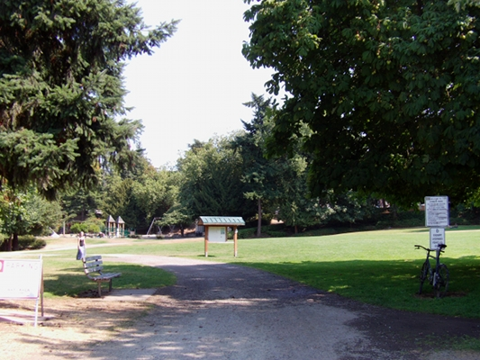
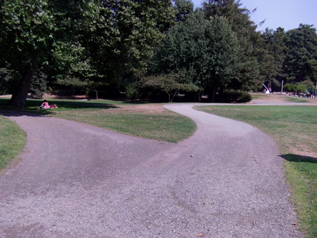
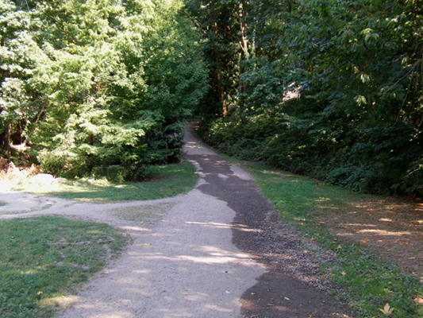
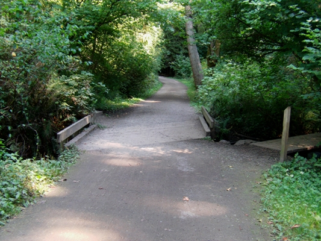
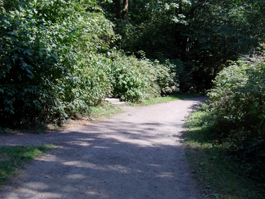
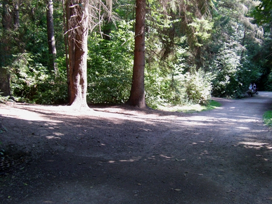
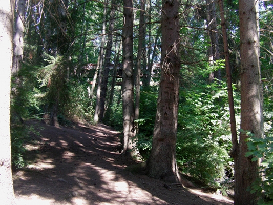
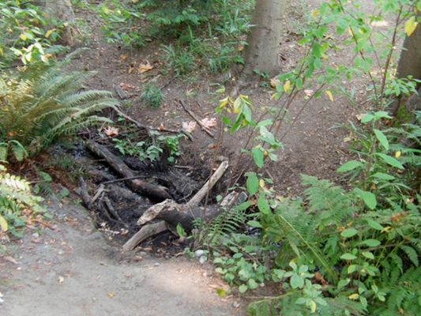
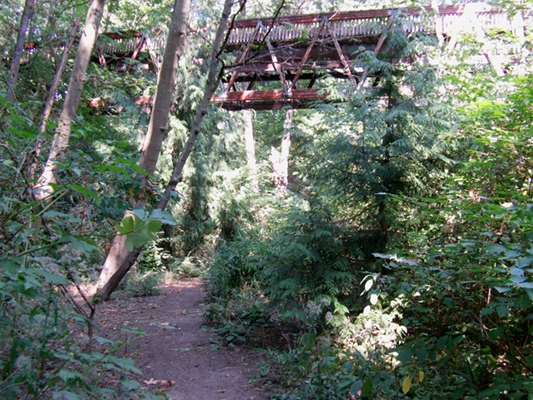

June 15, 2013
Forest Show
works by Neil Welch, John Teske, Nat Evans
with Natalie Mai Hall, Evan Smith, Christian Pincock
Seattle, WA
8–9pm
directions
The walk to the performance area takes about 15 minutes at a leisurely pace.
1) Begin at Cowen Park entrance on NE 61st and Brooklyn Ave NE
View larger map

2) Take a left at the sign, heading down into the ravine

3) Continue straight on the trail, pass under the 15th Ave bridge

4) Continue straight across footbridge

5) Pass the wooden steps on the left

6) Notice the clearing to the left

7) Enter, walk toward the wooden footbridge

8) Cross the small stream

9) Take a left into the performance area

weather
In case of unfavorable weather, we will perform under the 15th Ave Bridge in the park